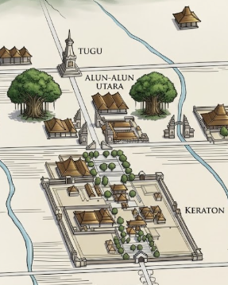
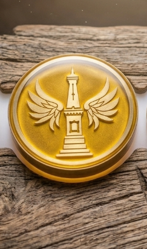
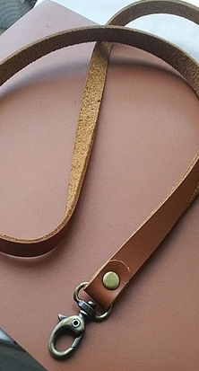
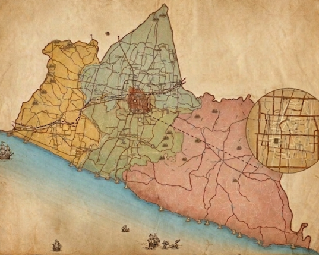

SANGKAN
SEBUAH AWAL
"Seringkali ada yang terlewat dari kota ini...
Sesuatu yang tersembunyi, yang hanya bisa ditemukan dengan melangkah kaki."
Sangkan bukan sekadar permainan, melainkan suatu cara untuk melihat Yogyakarta dari sudut yang berbeda. Ikuti petunjuk, pecahkan teka-teki di sudut-sudut kota yang mungkin sering engkau lewati. Kumpulkan 5 Fragmen untuk membentuk satu manifestasi kota—sebagai pengingatmu atas kota ini.
RUTE PERJALANAN

"Engkau akan menjalani sebuah perjalanan menyusuri jejak memori kota, membentang di sepanjang Sumbu Filosofis antara Tugu hingga Alun-Alun Utara Yogyakarta."
YANG ENGKAU DAPATKAN

ATMAKA TUGUManifestasi fisik eksklusif Founder.

LANYARD KULIT (1 SLOT)Tali kulit untuk membawa Atmakamu.

MAP & STARTER KITPeta fisik rahasia panduan perjalanan.
Bekal mata uang digital di semesta LAKUKOTA.
PERSIAPAN PERJALANAN
- Medan & Alas Kaki: Perjalanan menyusuri Sumbu Filosofis Yogyakarta (± 2.5 KM). Gunakan sepatu/alas kaki yang nyaman.
- Waktu Tempuh: Estimasi 2-3 jam. Engkau bebas memulai kapan saja dan berhenti sejenak untuk istirahat, makan atau minum kopi.
- Perangkat: Pastikan baterai smartphone terisi penuh (bawa powerbank sangat direkomendasikan), kuota internet stabil, dan fitur GPS menyala.